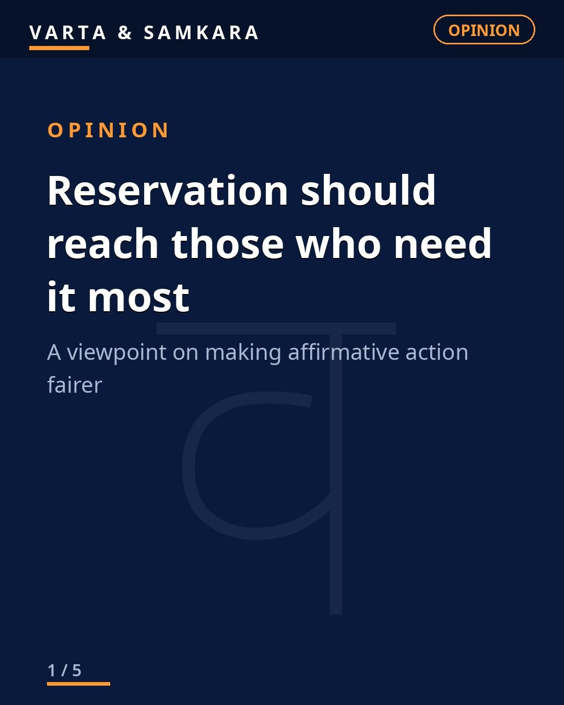
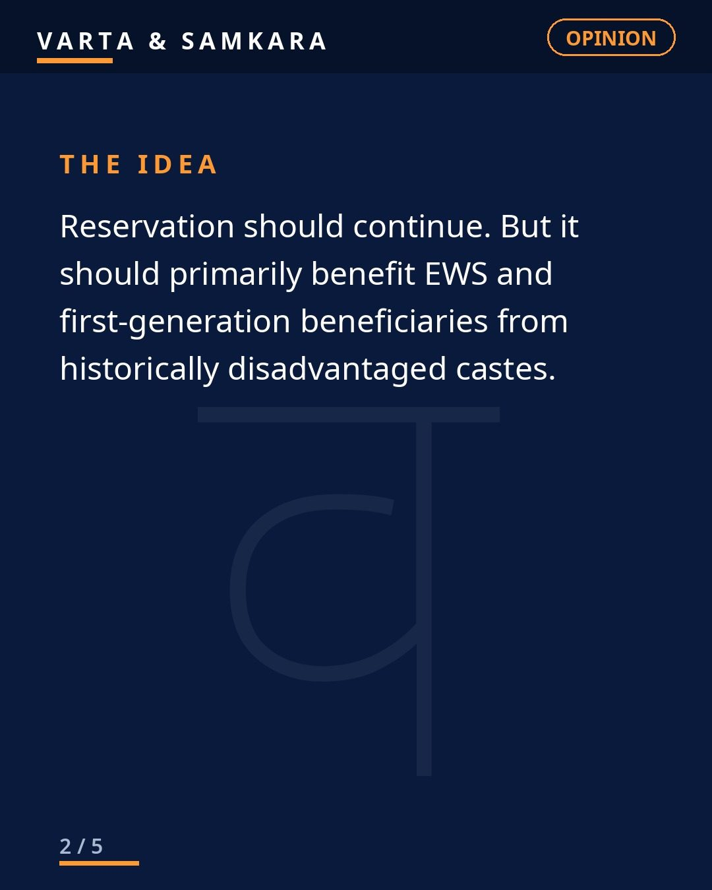
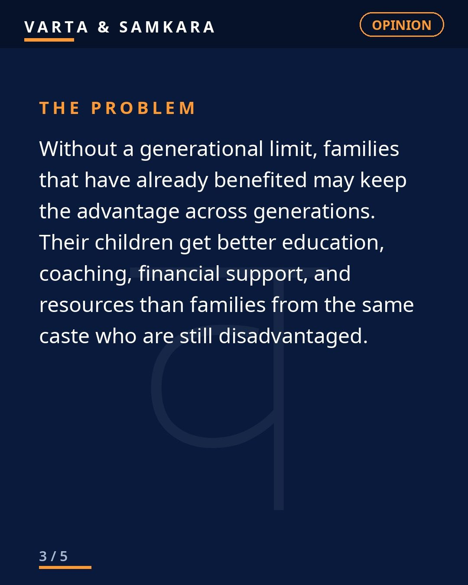
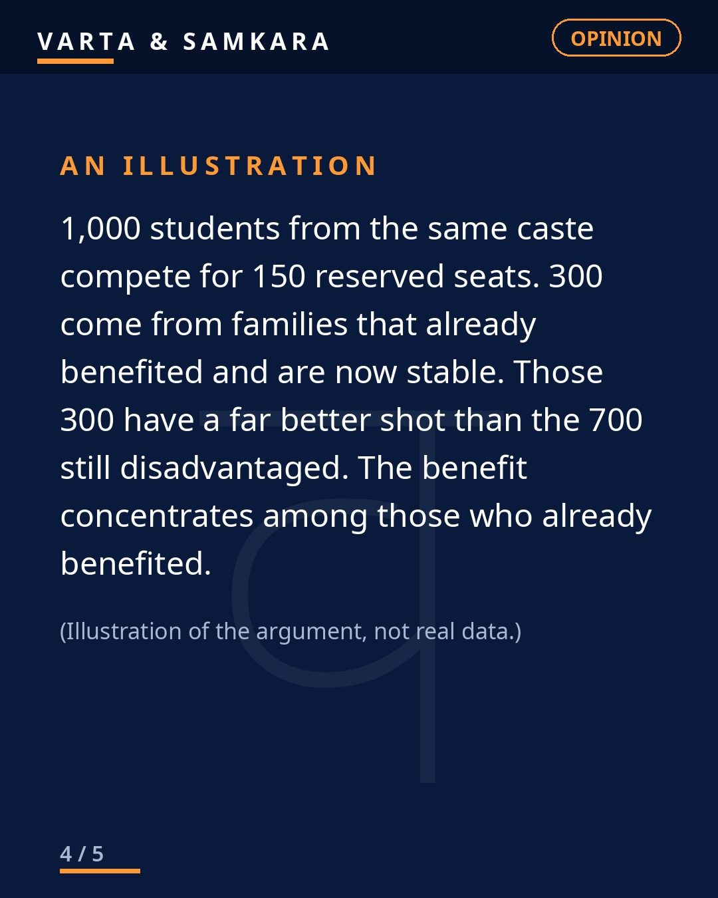
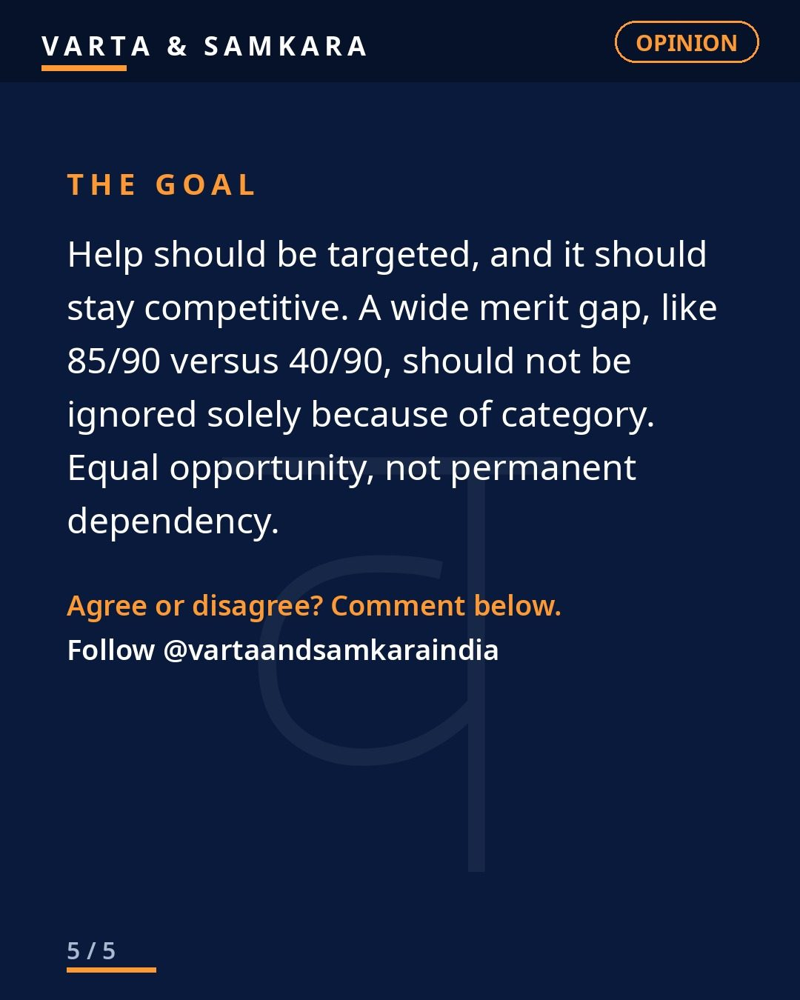

OPINION | Reservation should continue, but it should reach those who need it most.

Reservation should continue. But it should reach those who need it most.
That is the whole argument, and it is worth saying plainly before anyone twists it. Nobody is arguing that centuries of disadvantage disappeared overnight. The question is simpler and harder at the same time: is the help actually reaching the people it was meant for?
Right now, too often, the answer is no. Reservation should primarily benefit EWS families and first-generation beneficiaries from historically disadvantaged castes. The first person in a family to get an education, a government job, a seat in a good college because of reservation, that is the system working exactly as intended. But when the children and grandchildren of those beneficiaries keep claiming the same advantage, while families from the very same caste who never got anything remain exactly where they were, something has gone wrong.
The generational problem nobody wants to name
Without a generational limit, families that already benefited can keep the advantage across generations. The same surname, the same caste certificate, but a completely different life. One family has used reservation for three generations and is now firmly middle class. Another family with the same caste certificate has never seen the inside of a college. Under the current system, both get the same preference. That is not social justice. That is inheritance by another name.
A generational limit is not punishment. It is the logical endpoint of the policy working. If reservation lifted your grandfather and your father, the system succeeded with your family. Now step aside and let it lift someone else. That is how a ladder is supposed to work.
Targeted help, not permanent dependency
Help should be targeted, and it should stay competitive. The goal was never to create a permanent parallel track where a certificate matters more than capability. The goal was equal opportunity: a fair starting line so that talent from disadvantaged backgrounds can compete.
When help becomes permanent dependency, it hurts everyone. It hurts the beneficiary, who is never pushed to compete on equal terms. It hurts the genuinely disadvantaged, who get crowded out by people who no longer need the help. And it hurts the credibility of the entire policy, because the public starts seeing it as a political tool rather than a moral necessity.
Saying this is not being anti-reservation
Let me be clear, because this point gets deliberately misunderstood. Saying reservation should be reformed is not the same as saying reservation should end. The demand here is for sharper targeting, not for abolition. EWS families, first-generation learners, the poorest within every disadvantaged community, these are the people the policy exists for.
Reform is how you protect a policy from its own misuse. A system that cannot distinguish between the family that needs help and the family that has already received it for fifty years will eventually lose public support. And when it loses public support, the people who actually need it will be the first to suffer.
So yes, reservation should continue. But it should reach those who need it most. Everything else is detail.
In pictures




Source: Editorial (user viewpoint)
Visuals: Original text graphics
#ReservationDebate#Opinion#IndiaNews#CurrentAffairs#VartaSamkara
See the original reel / carousel with motion graphics on Instagram.
View on Instagram